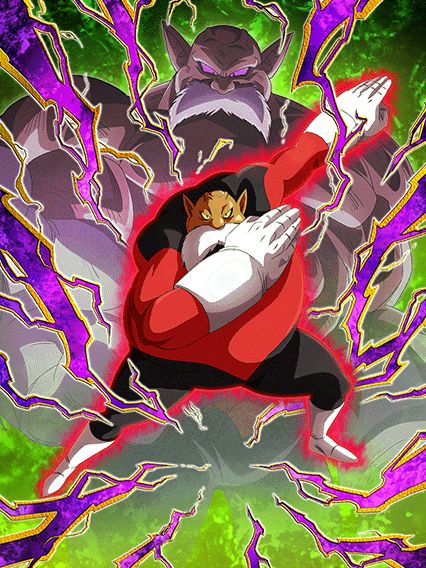
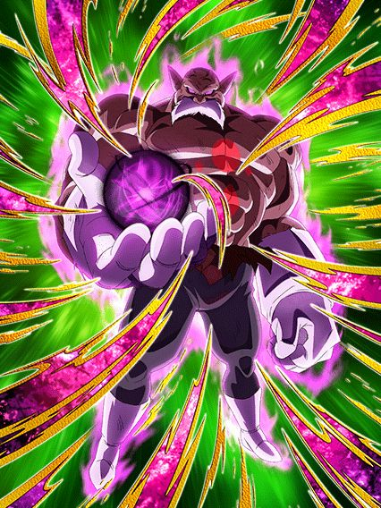
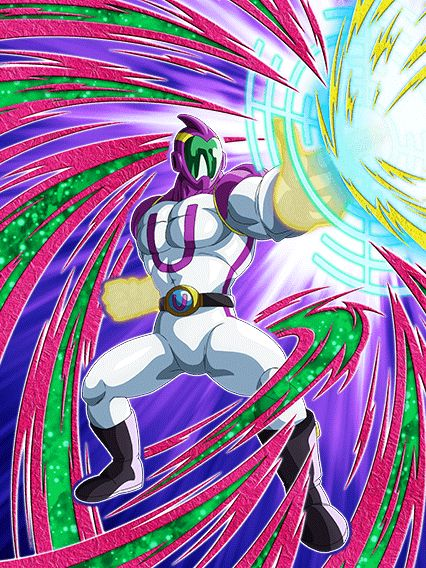

Ele fala pelas árvores.. e também pelos saxofones.
Tô falando sério, o Toppo tem uma das melhores intros desse jogo, a OST é impecável, trabalho divinamente perfeito
Enfim, o Toppo é um raro buff de Universe 11 que genuinamente é bem forte, mas que 90% dos jogadores vão skipar pela falta de DS e outros fatores
Se lembra do card do Ginyu LR que lançou faz uns 2 meses? Pois é, AGORA ele tem um time, já que o Toppo é o líder de Special Pose
A intro desse cara dá defesa ativa por 3 turnos e 11% de redução de dano permanente, mas o Toppo é o típico "tank que quer ficar no slot 1", já que lá ele ganha 200% de DEF a mais e fica com defesa ativa permanente, além de ele ter 20% de redução de dano natural
Em geral, na forma base ele é bem mais focado em ser um tank suporte, apesar de ter um dano decente
Ele muda orbs INT pra rainbow se estiver acima de 50% de HP, e dá 30% de ATK e DEF pra Special Pose e Defenders of Justice
Em geral, super simplão, mas bem confiável pra tankar e dar dano, mas a real doideira começa quando vc transformar esse cara
Condição bem decente, a partir do turno 4 se tiver outro Special Pose ou Defenders of Justice no turno, ou a partir do turno 6
Liberem o Lorax.

Se você não gosta de desvio, melhor se retirar e ir ler outra review..
O Toppo mantém várias das suas qualidades transformado, tendo defesa ativa permanente pra sempre, continua mudando orbs INT pra rainbow, e ainda tem um bom papel de tank.. mas com uma parada importante
Sobre o dano dele, agora fica muito mais absurdo, além de ele ter uma Active Skill super fácil de usar que deixa todos os ataques críticos e tem uma OST incrível demais também
Ele também nulifica Supers de Ki no primeiro turno da transformação, e depois desse turno, tem 50% de chance de nulificar, oq é aceitável né
Bom, o Toppo tem balanceados 80% de redução de dano, MAS, cada golpe que ele levar diminui a redução em 8% até ele ficar com apenas míseros 20%
Considerando que o papel dele na forma base é tankar, e transformado você quer que ele evite levar golpes demais.. a build certa pro hidden potential dele só pode ser desvio.. certo?
Não ironicamente, é de fato certo, mas você jamais vai achar um Toppo friend com essa build, então aproveite os Toppos full crítico, certamente valerá a pena 🔥🔥🔥
Em geral, card muito forte e muito útil, mas as builds erradas e a falta de summons nele será bem triste.

Eu genuinamente nem lembrava que esse cara tem nome.
Eu até acho o visual desse cara maneiro, mas infelizmente os devs decidiram que ele devia ser um "card com mecanicazinha engraçada" e ele acabou saindo bem estranho
Basicamente, ele é um card defensivo nos turnos 1, 3, 5, 7 e 9 dele, ganhando 30% de DEF por orb AGL pega e tem 50% de chance de desvio
Nos turnos 2, 4, 6, 8 e 10 dele ele vira um card de dano, ganhando 30% de ATK por orb STR pega e tem 70% de chance de crítico
E como se não bastasse toda essa bizarrice.. ele ainda ganha 30% de ATK e DEF por orb TEQ pega especificamente no turno 7, e somente nesse turno
Acho que ficou fácil de entender que é intankavel você ter um card que fica mudando toda hora
Ele pode ser útil pra alguma missão muito específica, mas em geral é só um personagem bem mid.